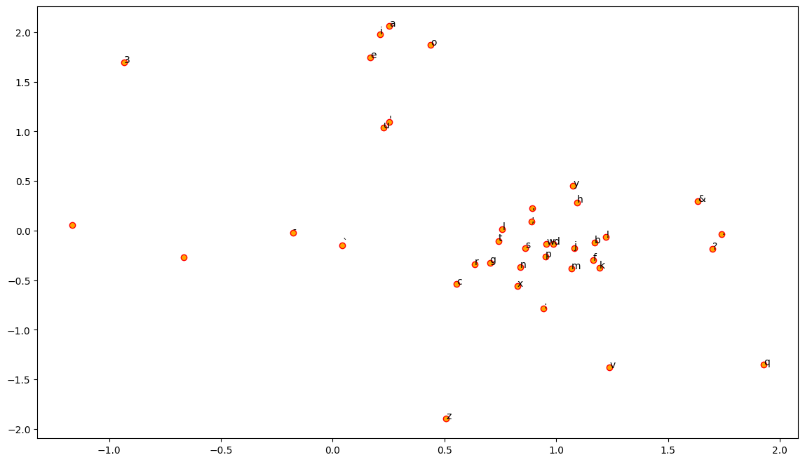
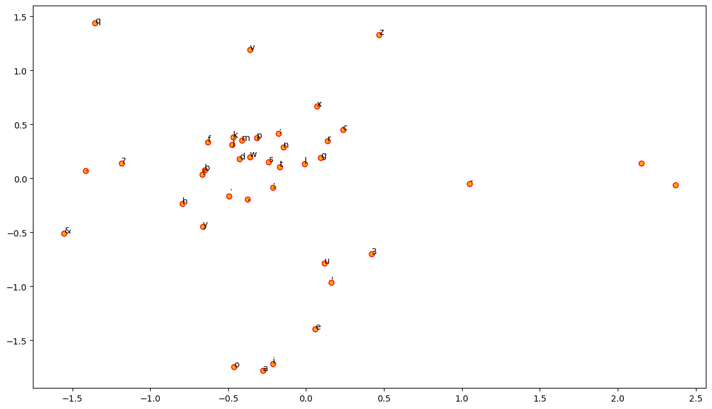

DATA_PATH = Path('data').parent / 'drive' / 'MyDrive' / 'paathai' / 'data'
TRAIN_PCT = 0.9
def load_data():
with open(DATA_PATH / 'input.txt', 'r') as f:
data = f.read()
return datadata
Fill in a module description here
def load_sample_data():
return "Natural Language Processing and Machine Learning is very interesting."Numericalize
- Should we strip extra whitespace from the text?
- Should we make every character small case?
- What should be the special padding char used to make sure equal batches are generated from the corpus?
- What should be the index assigned to the special char?
- How to create one_hot_vector of each individual char encoding using only numpy?
Notes:
- First we convert string 2 index
- Then we convert index 2 one hot encoded vectors
def get_data(sample=False):
if sample: data = load_sample_data()
else: data = load_data()
return data
def split_train_valid(data):
n = len(data)
return data[:int(n*TRAIN_PCT)], data[int(n*TRAIN_PCT):]
def get_lowercase_data(sample=False):
data = get_data(sample=sample)
return data.lower()data = get_data()
train_data, valid_data = split_train_valid(data)SPECIAL_CHAR = '`'
def make_vocab(c, min_freq=3):
vocab = [o for o, v in c.most_common() if v >= min_freq]
return [SPECIAL_CHAR] + vocabfrom collections import Counter
c = Counter(data)
def w2i(vocab): return {w:i for i,w in enumerate(vocab)}
def i2w(vocab): return {i:w for i,w in enumerate(vocab)}cvocab = make_vocab(c)
wi = w2i(vocab)
iw = i2w(vocab)idx = sorted(wi.values())
eye = np.eye(max(idx) + 1)
aa = eye[idx]
aa.shape(65, 65)wi{'`': 0,
' ': 1,
'e': 2,
't': 3,
'o': 4,
'a': 5,
'h': 6,
's': 7,
'r': 8,
'n': 9,
'i': 10,
'\n': 11,
'l': 12,
'd': 13,
'u': 14,
'm': 15,
'y': 16,
',': 17,
'w': 18,
'f': 19,
'c': 20,
'g': 21,
'I': 22,
'b': 23,
'p': 24,
':': 25,
'.': 26,
'A': 27,
'v': 28,
'k': 29,
'T': 30,
"'": 31,
'E': 32,
'O': 33,
'N': 34,
'R': 35,
'S': 36,
'L': 37,
'C': 38,
';': 39,
'W': 40,
'U': 41,
'H': 42,
'M': 43,
'B': 44,
'?': 45,
'G': 46,
'!': 47,
'D': 48,
'-': 49,
'F': 50,
'Y': 51,
'P': 52,
'K': 53,
'V': 54,
'j': 55,
'q': 56,
'x': 57,
'z': 58,
'J': 59,
'Q': 60,
'Z': 61,
'X': 62,
'3': 63,
'&': 64}cwi = [wi[o_] for o_ in data if o_ in wi]
cwi[:10][50, 10, 8, 7, 3, 1, 38, 10, 3, 10]''.join([iw[o_] for o_ in cwi[:10]])'First Citi'class Dataset():
def __init__(self, x, vocab, cw):
self.x = x
self.vocab = vocab
self.cw = cw
self._setup()
self._numericalize()
self._create_items()
def _setup(self):
self.w2i = {w:i for i,w in enumerate(self.vocab)}
self.i2w = {i:w for i,w in enumerate(self.vocab)}
def _numericalize(self):
x = SPECIAL_CHAR*self.cw+self.x+SPECIAL_CHAR*self.cw
self.nt = [self.w2i[o_] for o_ in x if o_ in self.w2i]
def _create_items(self):
self.contexts = []
self.targets = []
for i in range(0+self.cw, len(self.nt)-self.cw):
lw = self.nt[max(0, i-self.cw):i]
rw = self.nt[i+1:min(i+self.cw+1, len(self.nt))]
context = lw + rw
target = self.nt[i]
self.contexts.append(context)
self.targets.append(target)
def __len__(self): return len(self.contexts)
def __getitem__(self, i): return tensor(self.contexts[i]), tensor(self.targets[i], dtype=torch.long)c = Counter(data)
vocab = make_vocab(c)
dset = Dataset(data, vocab, cw=2)
dset[:2](tensor([[ 0, 0, 10, 8],
[ 0, 50, 8, 7]]),
tensor([50, 10]))train_ds, valid_ds = Dataset(train_data, vocab, cw=2), Dataset(valid_data, vocab, cw=2)xb, yb = train_ds[0:5]
assert len(xb)==5
xbtensor([[ 0, 0, 10, 8],
[ 0, 50, 8, 7],
[50, 10, 7, 3],
[10, 8, 3, 1],
[ 8, 7, 1, 38]])Dataloader
- Batch Size:
class DataLoader():
def __init__(self, ds, bs): self.ds,self.bs = ds,bs
def __iter__(self):
for i in range(0, len(self.ds), self.bs):
yield self.ds[i:i+self.bs]bs = 64
train_dl = DataLoader(train_ds, bs=bs)
valid_dl = DataLoader(valid_ds, bs=bs)xb, yb = next(iter(train_dl))
len(xb)64Model
class CBOW(Module):
def __init__(self, vocab_size, embed_size):
self.embed_size = embed_size
self.embed = nn.Embedding(num_embeddings=vocab_size, embedding_dim=self.embed_size)
self.linear = nn.Linear(self.embed_size, vocab_size)
self.layers = [self.embed, self.linear]
def forward(self, x):
out = torch.sum(self.embed(x), dim=1)
logits = self.linear(out)
return logitsmodel = CBOW(vocab_size=len(vocab), embed_size=2)
ret = model(xb)
ret.shapetorch.Size([64, 65])Training Loop
loss_func = F.cross_entropyxb, yb = next(iter(train_dl))
preds = model(xb)
preds[0], preds.shape(tensor([ 2.1967, 1.7395, 1.7965, -3.3907, 3.4688, 0.0461, -0.4433, 0.1141,
-3.1695, 0.1360], grad_fn=<SelectBackward0>),
torch.Size([2, 10]))loss_func(preds, yb)tensor(5.1907, grad_fn=<NllLossBackward0>)lr = 0.05
epochs = 6-torch.tensor(1/65).log()tensor(4.1744)def accuracy(out, yb): return (torch.argmax(out, dim=1)==yb).float().mean()for epoch in range(epochs):
for i, (xb, yb) in enumerate(train_dl):
preds = model(xb)
loss = loss_func(preds, yb)
loss.backward()
if i==0: print(loss.item())
with torch.no_grad():
for l in model.layers:
if hasattr(l, 'weight'):
l.weight -= l.weight.grad * lr
l.weight.grad.zero_()
if hasattr(l, 'bias'):
l.bias -= l.bias.grad * lr
l.bias.grad.zero_()5.020415306091309
3.262455701828003
3.1930222511291504
3.163545608520508
3.1491901874542236
3.139727830886841T = model.embed.weight.detach().cpu().numpy()
T.shape(65, 2)def plot_embeddings(T, vocab):
plt.figure(figsize=(14, 8))
plt.scatter(T[ :, 0], T[:, 1], c='orange', edgecolors='r')
for label, x, y in zip(vocab, T[:, 0], T[:, 1]):
plt.annotate(label, xy=(x, y), xytext=(0, 0), textcoords='offset points')Experiment: Lowercase data to reduce the vocabulary size
data = get_lowercase_data()
train_data, valid_data = split_train_valid(data)
len(train_data), len(valid_data)from collections import Counter
c = Counter(data)
SPECIAL_CHAR = '`'
def make_vocab(c, min_freq=3):
vocab = [o for o, v in c.most_common() if v >= min_freq]
return [SPECIAL_CHAR] + vocab
def w2i(vocab): return {w:i for i,w in enumerate(vocab)}
def i2w(vocab): return {i:w for i,w in enumerate(vocab)}c = Counter(data)
vocab = make_vocab(c)
cw = 2
train_ds, valid_ds = Dataset(train_data, vocab, cw=cw), Dataset(valid_data, vocab, cw=cw)bs = 64
train_dl = DataLoader(train_ds, bs=bs)
valid_dl = DataLoader(valid_ds, bs=bs)embed_size = 2
model = CBOW(vocab_size=len(vocab), embed_size=embed_size)loss_func = F.cross_entropy
lr = 0.05
epochs = 6
def accuracy(out, yb): return (torch.argmax(out, dim=1)==yb).float().mean()
print(-torch.tensor(1/len(vocab)).log())tensor(3.6636)for epoch in range(epochs):
for i, (xb, yb) in enumerate(train_dl):
preds = model(xb)
loss = loss_func(preds, yb)
loss.backward()
if i==0: print(loss.item(), f'accuracy: {accuracy(preds, yb)}')
with torch.no_grad():
for l in model.layers:
if hasattr(l, 'weight'):
l.weight -= l.weight.grad * lr
l.weight.grad.zero_()
if hasattr(l, 'bias'):
l.bias -= l.bias.grad * lr
l.bias.grad.zero_()3.9790732860565186 accuracy: 0.015625
2.926412582397461 accuracy: 0.171875
2.900470018386841 accuracy: 0.203125
2.893688440322876 accuracy: 0.203125
2.891512155532837 accuracy: 0.1875
2.890486001968384 accuracy: 0.1875T = model.embed.weight.detach().cpu().numpy()
T.shape(39, 2)plt.figure(figsize=(14, 8))
plt.scatter(T[ :, 0], T[:, 1], c='orange', edgecolors='r')
for label, x, y in zip(vocab, T[:, 0], T[:, 1]):
plt.annotate(label, xy=(x, y), xytext=(0, 0), textcoords='offset points')
Random Sampling
Every time we go through the dataset we should do it in random order
data = get_lowercase_data(sample=False)
train_data, valid_data = split_train_valid(data)
c = Counter(data)
vocab = make_vocab(c)
cw = 2
train_ds, valid_ds = Dataset(train_data, vocab, cw=cw), Dataset(valid_data, vocab, cw=cw)import randomclass Sampler():
def __init__(self, ds, shuffle=False): self.n, self.shuffle = len(ds), shuffle
def __iter__(self):
res = list(range(self.n))
if self.shuffle: random.shuffle(res)
return iter(res)from itertools import islicess = Sampler(train_ds)it = iter(ss)
for o in range(5): print(next(it))0
1
2
3
4ss = Sampler(train_ds, shuffle=True)
list(islice(ss, 5))[584975, 222905, 285595, 46585, 226912]import fastcore.all as fcclass BatchSampler():
def __init__(self, sampler, bs, drop_last=False):
fc.store_attr()
def __iter__(self): yield from fc.chunked(iter(self.sampler), self.bs, drop_last=self.drop_last)batches = BatchSampler(ss, 4)
list(islice(batches, 5))[[586337, 871216, 388669, 475731],
[404592, 38204, 299201, 538169],
[955798, 526126, 792506, 705877],
[156484, 695016, 642301, 69967],
[819679, 193196, 985299, 97064]]def collate(b):
xs, ys = zip(*b)
return torch.stack(xs), torch.stack(ys)class DataLoader():
def __init__(self, ds, batches, collate_fn=collate): fc.store_attr()
def __iter__(self): yield from (self.collate_fn(self.ds[i] for i in b) for b in self.batches)bs = 64
train_samp = BatchSampler(Sampler(train_ds, shuffle=True), bs)
valid_samp = BatchSampler(Sampler(valid_ds, shuffle=False), bs)train_dl = DataLoader(train_ds, batches=train_samp, collate_fn=collate)
valid_dl = DataLoader(valid_ds, batches=valid_samp, collate_fn=collate)xb, yb = next(iter(valid_dl))
xb[:3]tensor([[ 0, 0, 11, 11],
[ 0, 30, 11, 21],
[30, 11, 21, 9]])embed_size = 2
model = CBOW(vocab_size=len(vocab), embed_size=embed_size)loss_func = F.cross_entropy
lr = 0.05
epochs = 6
def accuracy(out, yb): return (torch.argmax(out, dim=1)==yb).float().mean()for epoch in range(epochs):
for i, (xb, yb) in enumerate(train_dl):
preds = model(xb)
loss = loss_func(preds, yb)
loss.backward()
if i==0: print(loss.item(), f'accuracy: {accuracy(preds, yb)}')
with torch.no_grad():
for l in model.layers:
if hasattr(l, 'weight'):
l.weight -= l.weight.grad * lr
l.weight.grad.zero_()
if hasattr(l, 'bias'):
l.bias -= l.bias.grad * lr
l.bias.grad.zero_()4.0674147605896 accuracy: 0.0625
2.560107469558716 accuracy: 0.265625
2.829186201095581 accuracy: 0.203125
2.4891812801361084 accuracy: 0.375
2.7670912742614746 accuracy: 0.21875
2.7291412353515625 accuracy: 0.1875T = model.embed.weight.detach().cpu().numpy()
T.shape(39, 2)plot_embeddings(T, vocab)